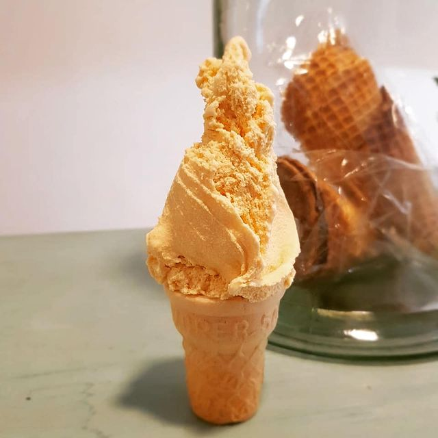
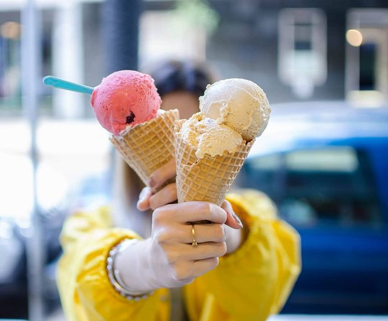
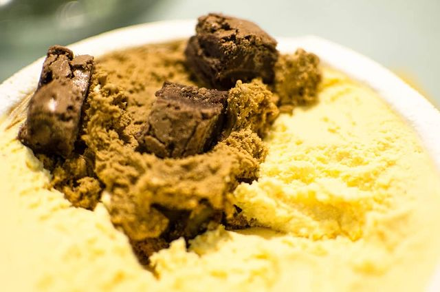
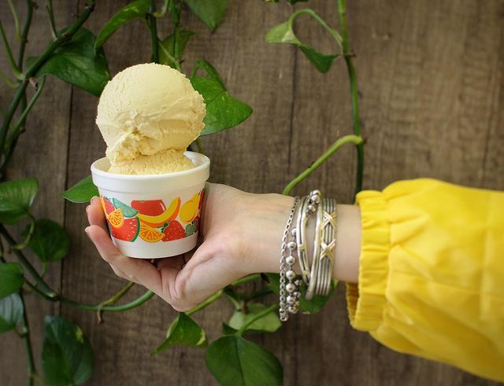
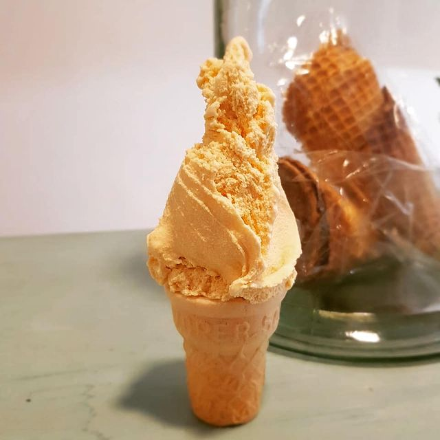
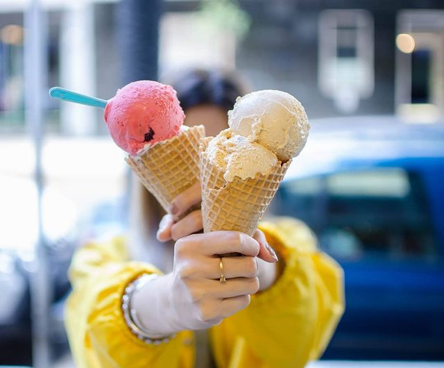
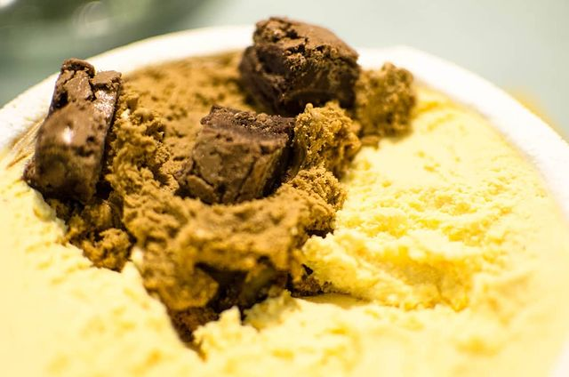
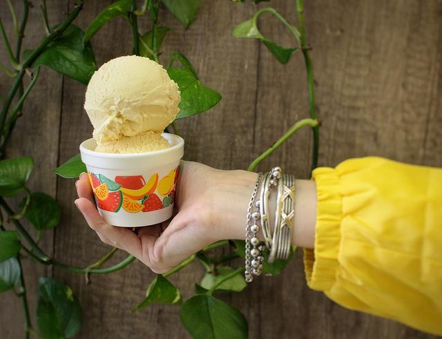

Our History
About Us
In 1998, in the heart of Buenos Aires, a small artisan ice cream shop was born and soon time later it become a classic in Palermo neighborhood. The story began with two childhood friends, Martín and Ana, who shared a passion for quality ice cream. They decided to create something of their own. At first, the ice cream shop was very small, offering only a few flavors of ice cream. But over time, the reputation of "Punto Rosso" began to grow, and it became a popular destination for lovers of artisan ice cream.
The owners have always prided themselves on using high-quality and natural ingredients. As the ice cream shop grew, the friends also began offering more creative and unique flavors, such as Hibiscus Lemon and Caramel-Vanilla Rooibos.
Despite the ups and downs of the Argentine economy, the ice cream shop continued to grow and prosper over the years. Today, "Punto Rosso" remains one of the favorite for Palermitans, as it is known for its commitment to quality and creativity. The ice cream shop has grown a lot, however for the owners the most important thing is the happiness and satisfaction of their customers, who keep coming back time and time again to enjoy their delicious ice cream.
 








Our Team
Martín
Passionate about his work, he always seeks to offer the best quality and flavor to his customers. He is a persevering and dedicated entrepreneur who has managed to make his small business a great success in the Palermo neighborhood.
Ana
Dedicated and a perfectionist, she always seeks to offer the best flavors and textures in her ice creams. His kindness and charisma have allowed his ice cream parlor to become a cozy and endearing place for ice cream lovers.
Leticia
Energetic and enthusiastic, she helps make the ice cream parlor a friendly and welcoming place. She is a committed individual who enjoys interacting with clients and being part of a team that shares her passion.
Julián Álvarez 2486 - Palermo
Tel: (011) 4826-4437
Opening hours:
Sundays to Thursdays from 12 PM to 12 AM
Friday and Saturday from 12 PM to 1 AM
Julián Álvarez 2486 - Palermo
Tel: (011) 4826-4437
Opening hours:
Sundays to Thursdays from 12 PM to 12 AM
Friday and Saturday from 12 PM to 1 AM